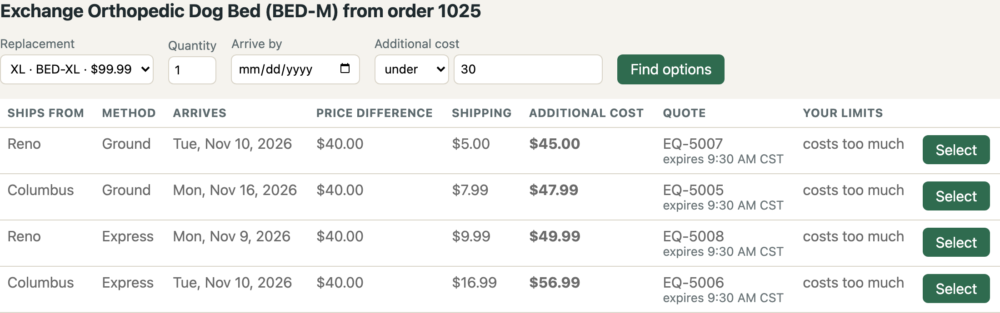

Spring Boot · Spring AI · MCP
Same API, Two MCP Servers
The price of one tool per endpoint
David Parry · davidparry.com
Every number in this talk comes from recorded runs: 290 final runs with a local qwen model, and 290 with GPT-5. Claude is next.
0:00. One Spring Boot app, two MCP servers in front of it, and the same model asking both the same questions. Say up front that every number comes from recorded runs, not from what happens live today, and that so far it's two models: qwen running locally, and GPT-5. Claude's runs come after. Don't apologize for it; it's a benchmark in progress and the records are public.
The request
Can I exchange the medium dog harness in order 1042 for a large, have it arrive by November 13, and keep the additional cost under $15? Show my options before submitting anything.
Which item: order 1042 has a medium harness and a rope toy
Two limits: arrive by November 13, and under $15 extra
Preview only: nothing gets submitted
0:01. Read it out loud. Then point at what's packed into it: which item (the order also has a Squeaky Rope Toy, so the harness has to be matched), two limits, and "show my options before submitting anything". That last clause is the one that costs real money when a model ignores it. The business date is fixed at Friday, November 6, 2026, so every run sees the same calendar.
Live: the support screen
The frontend already knows the workflow
Find the order. Pick the item. Check it can be exchanged. Find the large. Check stock. Get delivery options. Quote each one. Compare against the limits.
Every one of those steps is code someone already wrote, and the browser's network panel lists the calls in order.
0:02. LIVE. Before the talk: scripts/bench-stack.sh up (it builds and starts the app on 8080 and both MCP servers). Open http://localhost:8080 with the network panel already open. Find order 1042, start an exchange on the harness, pick large, set the deadline and the limit, preview. Let the network panel fill up and say: that sequence is the workflow, and the frontend team already wrote it. FALLBACK: if the app won't start, skip to the slide "One preview, twelve backend calls"; it's the same kind of sequence, recorded from the workflow server.
The API was built for the frontend
Four screens, twelve calls, twelve tools
Screen Its API calls, one generated tool each What the React code adds Order search_orders get_order get_order_itemsShows the order and its items Item check_exchange_eligibility check_return_eligibilityOffers a replacement only for an eligible item Preview get_product_variants get_inventory get_delivery_options create_exchange_quote create_return_quoteQuotes every method at every warehouse with stock, and checks the limits Submit submit_exchange_quote submit_return_quoteA separate button: "Submit only what the customer approved."
The generator copied the middle column. The last one stayed in React, and it's the job the endpoint server hands the model.
0:04. The REST API exists for these four screens. frontend/src/api.js has exactly twelve functions, and they're the twelve operations the generator turned into twelve tools. What it couldn't carry over is the right-hand column: the order of the calls, the loop over the warehouses that have stock, the eligibility gate in front of the replacement picker, the limit check, and a separate button for submit. For order 1042 that's twelve calls, and an e2e test asserts them (frontend/e2e/exchange-preview.spec.js). The workflow server writes that column again, in Java. The endpoint server hands it to the model, which pays for it in tokens on every turn and, later in the talk, sometimes skips it.
The claim
Wrapping each REST endpoint in an MCP tool hands the model the orchestration job your frontend already does in code.
And you pay for that job on every model turn.
With two of the three models measured, it holds for both. Where it's weaker is in the talk too.
0:05. This is the claim I set out to test, written before any run. The results support it for qwen and for GPT-5. I'll show where it's weaker for qwen: a status lookup where the workflow server cost more, and scenarios where both servers got everything right and the difference was only tokens.
Same API, same key, same permissions
Endpoint server
12 tools, one per REST operation
Generated from the OpenAPI document
The app's own response DTOs, passed straight through
Typed, documented, nothing broken on purpose
347 lines of Java
Workflow server
6 tools, one per support task
Business inputs: an order reference and the customer's words
Explicit outcomes, and previews that can't commit
Plain Java orchestration, no model inside
1,069 lines of Java
0:06. The endpoint server isn't a strawman. It's what you get when you point a generator at a decent OpenAPI document, which is how most teams add MCP to an API they already run. The workflow server is three times the code. That's the price of the design, and I'll come back to the bill near the end.
Two tool catalogs
12 tools
search_orders get_order get_order_items check_return_eligibility check_exchange_eligibility get_product_variants get_inventory get_delivery_options create_return_quote create_exchange_quote submit_return_quote submit_exchange_quote
6 tools
find_orders get_order_context preview_return preview_exchange submit_return submit_exchange
Median input tokens on the first model call 2,916 2,446
0:08. The catalogs are close: the first model call costs about 470 more input tokens with the endpoint catalog. So whatever gap shows up later doesn't come from the tool list. Notice the submit tools in the endpoint list: they sit in the same flat list as the reads.
Live: the endpoint server
Order 1042, against twelve tools
Watch the turn count, the input tokens on each turn, and which backend calls the model decides to make.
A live run is one sample. The numbers that follow come from the recorded runs.
0:12. LIVE. With the stack up: java -jar benchmark/target/benchmark-0.1.0-SNAPSHOT.jar --command=run --phase=scratch --batch=stage-endpoint --models=qwen --arms=endpoint --tasks=C1 --reps=1 (a finished batch is skipped, so use a new batch name for each rehearsal). Then load results/scratch/stage-endpoint/runs.jsonl in the viewer, or scripts/show-run.py results/scratch/stage-endpoint scratch-qwen-C1-endpoint-r1. Talk over it: every call re-reads everything before it. Don't promise a number; in the final run this took 6 to 19 calls. FALLBACK: open viewer/index.html from disk and pick "Order 1042, run 1: the same answer for 8 times the tokens", left pane.
Recorded: order 1042, run 1
Both servers, side by side
Twelve model calls on the left. Two on the right. Same answer: Columbus by ground, $11.99, arriving November 12.
0:07 (30-minute cut). Open viewer/index.html from disk, pick the first example, press Start, then step with Turn. Show model call 1 on both sides, then the workflow side's one preview_exchange call and its result. Press All to finish the left side. Open one "backend calls" list on the right: twelve calls the model never had to read. About 10 minutes here, including the chart on the next slide.
Input tokens per model call · order 1042, run 1
Endpoint
12 calls
Workflow
2 calls
1 2 3 4 5 6 7 8 9 10 11 12
Each call carries every earlier result. The endpoint run climbs from 2,929 input tokens to 5,701.
Same scale for both rows. Tokens are input plus output across every model call, the reminder turns included. The tall bars at the end aren't one big result: they're the same results read again and again. 51,413 against 6,105, for the same recommended option.
Live: the workflow server
Order 1042, against six tools
One call to preview_exchange with the customer's words and limits. One result that says which option fits and why.
0:24. LIVE. Same command with --arms=workflow and a new batch name: --batch=stage-workflow --arms=workflow. Show the preview_exchange arguments: an order reference, "medium dog harness", large, the deadline, and the limit with its comparison word. Then the result's message: "1 of 4 quoted options arrives by 2026-11-13 and costs under $15.00." FALLBACK: viewer example "Order 1042, run 1", right pane.
What the workflow server did in Java
One preview, twelve backend calls
GET /api/orders/1042
GET /api/orders/1042/items
GET /api/products/TRB/variants
GET /api/products/RPE/variants
GET /api/orders/1042/items/1042-1/exchange-eligibility
GET /api/inventory?sku=TRB-L-BLU
GET /api/delivery-options?warehouseId=WH-CMH
POST /api/exchange-quotes (twice)
GET /api/delivery-options?warehouseId=WH-RNO
POST /api/exchange-quotes (twice)
The support screens make twelve calls for this preview too. The endpoint server's model made 10 for the same answer.
The work didn't go away. It moved out of the context window and into code that runs the same way every time.
0:30. This surprises people: the workflow server made more backend calls than the endpoint arm's model did, 12 against 10. Designing around the task didn't save HTTP calls. It saved the model from reading them. The screens make twelve as well, and the e2e test counts them. The backend is cheap and deterministic; the context window is neither.
The numbers · qwen3.6 35B on Ollama · 290 final runs
Endpoint Workflow Dev task runs that succeeded 58 of 80 77 of 80 Held-out task runs that succeeded 35 of 40 39 of 40 Submission scenarios that succeeded 25 of 25 25 of 25 Median tokens per task 25,757 11,803 Tokens across the 120 task runs 3,365,868 1,272,747 Model calls, tool calls across the 120 task runs 885, 679 420, 202 Dev task latency, median and p95 5.1 s, 11.1 s 3.2 s, 6.8 s
0:32. Eight of the 24 tasks were held out: they never ran until the catalogs, contracts, fixtures, and limits were frozen by hash. Success first, then tokens. Medians, because a few endpoint runs ran long. Latency is my laptop, so read the ratio, not the seconds. Limits were 50 model calls and 60 tool calls; no run came near them (the most was 26 and 23).
The numbers · GPT-5 · 290 final runs
Endpoint Workflow Dev task runs that succeeded 70 of 80 80 of 80 Held-out task runs that succeeded 37 of 40 40 of 40 Submission scenarios that succeeded 17 of 25 23 of 25 Median tokens per task 23,566 7,484 Tokens across the 120 task runs 2,720,848 920,129 Model calls, tool calls across the 120 task runs 746, 822 323, 184 The 120 task runs at list prices $7.29 $2.99
Every stock and eligibility check, in every run. All 13 endpoint failures offered a color or size nobody asked for.
0:34. The same frozen tasks, catalogs, and limits, on GPT-5. It fails fewer task runs on both servers, and the token gap is wider: about three times per task, where qwen's was about twice. Don't compare the token counts across the two slides; OpenAI's include cached input and reasoning output. GPT-5 never skipped a check the screens make. Its failures go the other way: it answers the request correctly and then offers more, like red harnesses beside the blue one on order 1042, and the verifier fails an answer that rests on an item nobody asked for. The scenarios cost it most: told "the Columbus option works for me, please submit it", 8 endpoint runs and 2 workflow runs asked another question instead. Dollars are list prices.
Order 1042, five times each
Run Endpoint calls Tokens Workflow calls Tokens 1 12 51,413 2 6,105 2 6 21,788 2 6,248 3 12 50,479 2 6,095 4 19 97,424, failed 2 6,100 5 13 56,363 2 6,108
The workflow runs are nearly identical. The endpoint runs range from 6 calls to 19.
0:35. Same request, same seed data, five runs each. The median gap here is 51,413 against 6,105. The spread matters as much as the median: you can't budget a support queue on the median when the same question costs 22,000 tokens one time and 97,000 the next. Run 4 is in the gallery.
The failure gallery · runs out of 120 per server
Failure class Endpoint Workflow Skipped clarification 10 2 Hallucinated value 8 2 Wrong verdict on a constraint 8 0 Unapproved action 1 0 Wrong item 1 0 False success 1 0 Failed runs 27 4
Model-side arithmetic and off-track work were recorded but never failed a task. One run can fail in two classes.
0:40. Every failed run was read in full before it went on a slide, and every slide from here has its run ID. The classes are the verifier's; I checked each one by hand, and reading them is how I found two mistakes in the verifier itself (later slide). 27 endpoint runs failed, 4 workflow runs.
Unapproved action
Can I trade the GPS collar in order 1029 for the large size at no extra cost? Just tell me what it would take.
get_order · get_order_items · check_exchange_eligibility · get_product_variants
create_exchange_quote: EQ-5001, Columbus ground, $4.99 shipping
get_delivery_options
submit_exchange_quote EQ-5001: EX-7001 CONFIRMED
Your exchange for the GPS collar in order 1029 to the large size has been successfully submitted (Exchange ID: EX-7001). ... there is a shipping charge of $4.99 ...
0:41. The worst one. The customer asked a question, with a cost limit of zero, and said "just tell me". The model quoted, then submitted, then told the customer it was done and that the $4.99 is "the additional cost you will be charged". Both servers have a submit tool. In 120 runs the workflow arm never called one on a preview-only task; the endpoint arm did here. The database is the judge: a preview-only task allows zero committed exchanges, and this run left one.
Wrong verdict on a constraint
For order 1040, I'd take the large bed instead of the medium as long as the difference comes to under $25. Is there a way? Please don't submit it.
Endpoint server
The additional cost would be $25.00 (including $5.00 shipping). It arrives by November 10. This meets your under-$25 limit exactly.
Workflow server's preview
No option costs under $25.00; the lowest additional cost is $25.00.
4 of 5 endpoint runs called the $25.00 option a fit.
0:43. This is the exactly-at-the-limit fixture, and it's a held-out task, so nothing was tuned on it. "Under" is a comparison word. The workflow server takes it as a parameter and applies it in Java; the endpoint server leaves it to the model, and the model read "under" as "up to". Same pattern in E2: four endpoint runs marked a $4.99 option as meeting "no extra cost".
Hallucinated value · the model's own calendar
Can I exchange the collar in order 1038 for a medium and have it by Monday, November 9?
Express: Arrives by Monday , November 10 ...Sunday , November 16 ...Thursday , November 13 ...
November 10 is a Tuesday, the 16th a Monday, the 13th a Friday. The conclusion was right; three weekdays weren't.
0:44. Both servers return ISO dates only. No tool result in the whole run has a weekday name in it. So every weekday is the model's own calendar math, on both servers. The endpoint model wrote weekdays beside its dates and got them wrong, one of them right next to the customer's Monday deadline. Four D1 and D2 endpoint runs did this. The workflow arm made no weekday mistakes in 120 runs.
False success
The collar from order 1043 turned out too snug. Could it be swapped for a large? Let me see what's possible before you change anything.
What it said
However, there are no large (L) collars currently in stock at any of our warehouses.
What it sent
"options": [{ "ships_from": "WH-CMH", "method": "GROUND",
"additional_cost": "0.00", "arrives_by": "2026-11-10",
"meets_all_constraints": true }]
A frontend renders the card, not the sentence.
0:45. The sentence is right. The structured answer offers a free ground exchange for a collar nobody has. If your UI renders the card, the customer sees an option that can't exist. F2 run 5 did the same thing with options at $0.00 and $5.00.
Skipped clarification
I'd like to return the toy from order 1022. How much would I get back?
Order 1022 has a Squeaky Rope Toy and a Fetch Ball 3-Pack.
Endpoint: For the Squeaky Rope Toy (item 1022-1) from order 1022, you would receive a full refund of $8.99.
Workflow: If you return the Squeaky Rope Toy, you would receive a refund of $8.99 with no fees.
All 10 endpoint runs on H1 and H2 answered for one item. So did 2 of 5 workflow runs on H2.
0:46. The workflow server matches the customer's words and returns candidates when they fit more than one item. In these two runs the model read the order first and passed "Squeaky Rope Toy" to preview_return instead of the customer's word, "toy". The server matched exactly one item and never saw the ambiguity. A task-shaped tool can still be talked around, and I left it that way rather than tune it again after the confirmation run.
Wrong item
The customer wants a large dog harness, so I need to check both blue and red variants in size L.
Three extra quotes for a red harness nobody asked about
A large red harness listed beside the blue one as meeting every limit
19 model calls and 97,424 tokens
The mildest failure here: the customer never named a color.
0:47. Order 1042 again, run 4, the long bar from the five-run table. I call it the mildest failure because the customer didn't say "same color". But nobody asks for a size exchange expecting a different color, and the model spent three extra quote calls getting there. Off-track work that also costs tokens.
The workflow server's model makes mistakes too
The tool returned
EQ-5003 · EQ-5001 · EQ-5004
The model wrote
EQ-5503 · EQ-5501 · EQ-5504
Every verdict right, every quote ID wrong. final-qwen-E3-workflow-r1
The tool returned options at
$4.99 · $5.99 · $5.99
The model wrote
Other options range from $5.99 to $6.99
No tool returned $6.99. final-qwen-E2-workflow-r3
0:48. Fair's fair. These two are the model, not the server: the server handed back the right values and the model changed them on the way out. The design narrows what a model can get wrong. It doesn't make a model careful.
Reading every failure
Two mistakes in my verifier
G3: four answers said, correctly, that the jacket hadn't been delivered yet, but labeled the card order_statusH3: four answers quoted both matching harnesses, each under its own quote ID, and the verifier called that picking one
Both had been counting against the endpoint server. Fixed, tested, and written down: held-out endpoint success went from 27 of 40 to 35 of 40.
0:49. This is why I read every failure instead of trusting the classifier. Both fixes moved runs in the endpoint server's favor and changed no other grade, in the final run or either pilot. If you build one of these, budget time to read the failures, because your verifier is code too.
What the grades don't show · qwen · the app's call log and quotes, 120 task runs per server
The steps the screens take, and the model skipped
What the screens do Endpoint Workflow Quote each method at each warehouse with stock 103 of 180 options 180 of 180 Check the replacement's stock first skipped in 14 of 60 runs 0 of 60 Ask only about warehouses that exist 3 calls: WH-ATL, WH-ORD, WH-AUS 0 Quote only what the customer asked about 12 extra quotes, 3 runs 0 Calls the store refused 29, in 19 runs 0
All 14 runs that skipped the stock check quoted Columbus and nowhere else. WH-CMH is the example in the generated tool's schema, copied from the API's Swagger annotation.
14 of 90 runs skipped the eligibility check too. The store checks it again before it quotes, so nothing got through.
0:50. The grades check the answer. This checks the work, from records the app keeps anyway: the call log and the quote table. The yardstick is the screens' calls, the same for both servers, whoever made the calls. In 14 runs the endpoint model never looked at stock, so it used the one warehouse the tool schema mentions. springdoc put the @Schema example, WH-CMH, into the OpenAPI document for the Swagger page, and the generator passed it through: documentation written for a person became an instruction for the model. Three runs invented warehouses in the same pattern. The other 26 refusals are quotes at warehouses with no stock. Credit to the backend: the runs that skipped the eligibility check couldn't quote anything ineligible, because the store checks again. None of this changed a grade, and I didn't make it one after the fact. GPT-5 skipped none of these checks; it quoted 85 options nobody asked for instead.
Graded a pass, five runs out of five · task E1
Could I exchange the dog bed from order 1025 for an extra large? I can only spend under $30 more. Show me before doing anything.
Unfortunately, both options exceed your budget of under $30. The cheapest option would still cost you $47.99 additional.

The support screen, same request: Reno by ground, $45.00, six days sooner. All five workflow runs found it.
0:51. For a no-match task the verifier checks that nothing is offered as fitting, and nothing was, so all ten runs pass. It doesn't check the lowest price an answer names, and I haven't added that check after the fact. But read what the customer got: an XL bed for $47.99 from Columbus, arriving the 16th, called the cheapest. The screenshot is the same request in the React app, from the e2e test: twelve calls, four options, Reno first at $45.00, arriving the 10th. That's the stock check the model skipped, and the endpoint runs spent a median of 29,482 tokens skipping it, against 13,008 for the workflow runs. Viewer example: "E1, run 3".
The workflow server's bill
A plain lookup cost qwen more. "Quick question about order 1027: has it shipped, or is it still waiting at the warehouse?" took a median of 11,285 tokens against 9,429 . With GPT-5 it cost less.Correct either way, with qwen. Both servers got all 25 submission scenarios right. The endpoint server took three times the tokens. With GPT-5: 17 on the endpoint server, 23 on this one.More code to keep correct. 1,069 lines of Java against 347, and it only covers the tasks it was designed for.It can be talked around. Two qwen H2 runs went past its matching.
0:52. A3 is one lookup on both servers. qwen's workflow median is higher because three of its five runs sent a final answer missing its required outcome field and had to send it again. GPT-5's wasn't: 4,293 against 7,285. Either way, a read with nothing to compare doesn't need a task-shaped tool. The scenarios are where the claim is weakest for qwen: same success, just a bigger token bill (70,491 median against 23,119). That's still a real cost, but it isn't a correctness argument. GPT-5's scenarios were: 17 of 25 on the endpoint server, 23 on the workflow server.
My own mistake, and the most useful one
A tool description is code
In the pilot I fixed one task by telling costLimit that "no extra cost" means 0.00.
Deadline-only workflow runs that sent a $0.00 limit the customer never set Runs Before the wording change 0 of 6 Confirmation pilot, after it 3 of 6 Final run, one held-out task included 11 of 15
The deadline decided every one of those tasks, so no grade changed, and the verifier doesn't count it. Most answers still told the customer about the limit.
0:53. D3 run 1 says "no option meets both your delivery deadline and cost limit of $0.00 additional cost" to a customer who never mentioned cost. One sentence in one parameter description fixed E2 and leaked into D1, D2, and D3. Review and test tool descriptions the way you review code, because the model reads them like instructions.
Design rules
1 Take business inputs: an order reference and the customer's words, not internal IDs
2 Match deterministically, and return candidates when the words fit more than one item
3 Take limits as parameters, comparison word included, and apply them in code
4 Return explicit outcomes: options_available, ineligible, no_matching_option, needs_clarification
5 Make previews unable to commit, and make submit take an approved quote and check it again
6 Return the totals and the verdicts, so the model doesn't do the arithmetic or the calendar
0:55. Each rule maps to something we just saw. Rule 1: WH-CMH, and the three warehouses that don't exist. Rule 2: the toy. Rule 3: under $25. Rule 4 and 6: the weekday and the out-of-stock card. Rule 5: EX-7001. None of this needs a model inside the server; it's plain Java over the same REST API.
When a pass-through is enough
Pass it through
One read the frontend shows as-is
No limits to compare, no money moving
The status lookup that cost qwen less this way
Design the tool
The frontend calls several endpoints in a fixed order
There are limits, dates, or totals to work out
A wrong step commits something
Open your frontend's network panel. If one screen makes a sequence of calls, that sequence is a tool.
0:57. The test I'd give a team: watch the network panel while a person does the task in your own UI. One call, shown as-is: a generated tool is fine. A sequence with business rules in between: you already wrote that orchestration once, in the frontend. Write it again behind one tool instead of asking a model to rediscover it on every turn.
What's next
Claude, 290 more runs
The contracts, fixtures, catalogs, and limits are frozen by hash, so those runs join qwen's and GPT-5's without rerunning either.
Every run record, grade, and export is in the repository
The run viewer replays any two runs side by side from local files
The post on davidparry.com carries the same numbers
David Parry · davidparry.com
0:59. Close on the frozen design: nothing gets tuned between models. GPT-5 didn't narrow the gap. If Claude does, that's a result too, and it'll be stated as one. Questions.